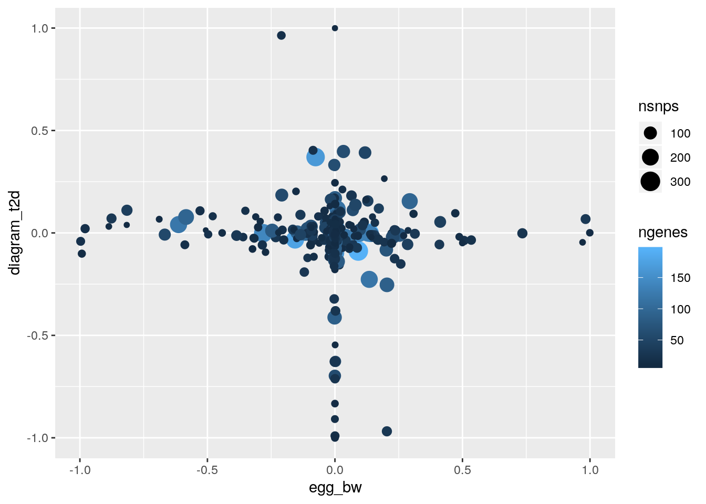
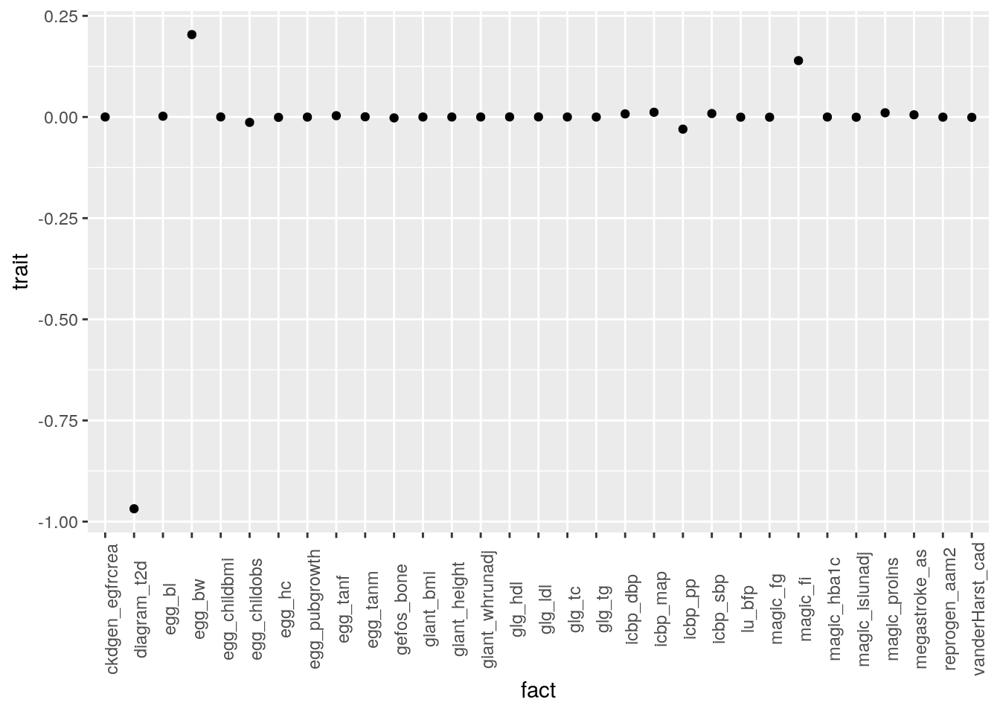

Fixed factors from pathways
Jean Morrison
2019-09-06
Last updated: 2019-09-09
Checks: 6 1
Knit directory: sumstatFactors/
This reproducible R Markdown analysis was created with workflowr (version 1.4.0.9000). The Checks tab describes the reproducibility checks that were applied when the results were created. The Past versions tab lists the development history.
Great! Since the R Markdown file has been committed to the Git repository, you know the exact version of the code that produced these results.
Great job! The global environment was empty. Objects defined in the global environment can affect the analysis in your R Markdown file in unknown ways. For reproduciblity it’s best to always run the code in an empty environment.
The command set.seed(20190819) was run prior to running the code in the R Markdown file. Setting a seed ensures that any results that rely on randomness, e.g. subsampling or permutations, are reproducible.
Great job! Recording the operating system, R version, and package versions is critical for reproducibility.
- fit1
- flash1
- get_annots
- pathway1
To ensure reproducibility of the results, delete the cache directory pathway_factors_cache and re-run the analysis. To have workflowr automatically delete the cache directory prior to building the file, set delete_cache = TRUE when running wflow_build() or wflow_publish().
Great job! Using relative paths to the files within your workflowr project makes it easier to run your code on other machines.
Great! You are using Git for version control. Tracking code development and connecting the code version to the results is critical for reproducibility. The version displayed above was the version of the Git repository at the time these results were generated.
Note that you need to be careful to ensure that all relevant files for the analysis have been committed to Git prior to generating the results (you can use wflow_publish or wflow_git_commit). workflowr only checks the R Markdown file, but you know if there are other scripts or data files that it depends on. Below is the status of the Git repository when the results were generated:
Ignored files:
Ignored: .Rhistory
Ignored: .Rproj.user/
Ignored: analysis/fixed_factors_cache/
Ignored: analysis/metabo_flash_experiments_cache/
Ignored: analysis/pathway_factors_cache/
Untracked files:
Untracked: analysis_data/.~lock.metabo2_gwas.csv#
Untracked: analysis_data/HACER-enhancers.txt
Untracked: analysis_data/HACER_README.txt
Untracked: analysis_data/bc_gwas_mats.RDS
Untracked: analysis_data/eqtl_genes.RDS
Untracked: analysis_data/flashier_res2019-09-03.RDS
Untracked: analysis_data/metabo2_gwas.csv
Untracked: analysis_data/metabo3_order1__flashier__by_col.RDS
Untracked: analysis_data/metabo3_order1__flashier__by_row.RDS
Untracked: analysis_data/metabo3_order1__flashier__constant.RDS
Untracked: analysis_data/metabo3_order1__flashier__kronecker.RDS
Untracked: analysis_data/metabo3_order1__flashier__noisy_bycol.RDS
Untracked: analysis_data/metabo3_order1__flashier__noisy_byrow.RDS
Untracked: analysis_data/metabo3_order1__flashier__noisy_constant.RDS
Untracked: analysis_data/metabo3_order1__flashier__zero.RDS
Untracked: analysis_data/metabo3_order1__from_data__by_col.RDS
Untracked: analysis_data/metabo3_order1__from_data__by_row.RDS
Untracked: analysis_data/metabo3_order1__from_data__constant.RDS
Untracked: analysis_data/metabo3_order1__from_data__kronecker.RDS
Untracked: analysis_data/metabo3_order1__from_data__noisy_bycol.RDS
Untracked: analysis_data/metabo3_order1__from_data__noisy_byrow.RDS
Untracked: analysis_data/metabo3_order1__from_data__noisy_constant.RDS
Untracked: analysis_data/metabo3_order1__from_data__zero.RDS
Untracked: analysis_data/metabo3_order1__soft_impute__by_col.RDS
Untracked: analysis_data/metabo3_order1__soft_impute__by_row.RDS
Untracked: analysis_data/metabo3_order1__soft_impute__constant.RDS
Untracked: analysis_data/metabo3_order1__soft_impute__kronecker.RDS
Untracked: analysis_data/metabo3_order1__soft_impute__noisy_bycol.RDS
Untracked: analysis_data/metabo3_order1__soft_impute__noisy_byrow.RDS
Untracked: analysis_data/metabo3_order1__soft_impute__noisy_constant.RDS
Untracked: analysis_data/metabo3_order1__soft_impute__zero.RDS
Untracked: analysis_data/metabo3_order1_mask__flashier__by_col.RDS
Untracked: analysis_data/metabo3_order1_mask__flashier__by_row.RDS
Untracked: analysis_data/metabo3_order1_mask__flashier__constant.RDS
Untracked: analysis_data/metabo3_order1_mask__flashier__kronecker.RDS
Untracked: analysis_data/metabo3_order1_mask__flashier__noisy_bycol.RDS
Untracked: analysis_data/metabo3_order1_mask__flashier__noisy_byrow.RDS
Untracked: analysis_data/metabo3_order1_mask__flashier__noisy_constant.RDS
Untracked: analysis_data/metabo3_order1_mask__flashier__zero.RDS
Untracked: analysis_data/metabo3_order1_mask__from_data__by_col.RDS
Untracked: analysis_data/metabo3_order1_mask__from_data__by_row.RDS
Untracked: analysis_data/metabo3_order1_mask__from_data__constant.RDS
Untracked: analysis_data/metabo3_order1_mask__from_data__kronecker.RDS
Untracked: analysis_data/metabo3_order1_mask__from_data__noisy_bycol.RDS
Untracked: analysis_data/metabo3_order1_mask__from_data__noisy_byrow.RDS
Untracked: analysis_data/metabo3_order1_mask__from_data__noisy_constant.RDS
Untracked: analysis_data/metabo3_order1_mask__from_data__zero.RDS
Untracked: analysis_data/metabo3_order1_mask__soft_impute__by_col.RDS
Untracked: analysis_data/metabo3_order1_mask__soft_impute__by_row.RDS
Untracked: analysis_data/metabo3_order1_mask__soft_impute__constant.RDS
Untracked: analysis_data/metabo3_order1_mask__soft_impute__kronecker.RDS
Untracked: analysis_data/metabo3_order1_mask__soft_impute__noisy_bycol.RDS
Untracked: analysis_data/metabo3_order1_mask__soft_impute__noisy_byrow.RDS
Untracked: analysis_data/metabo3_order1_mask__soft_impute__noisy_constant.RDS
Untracked: analysis_data/metabo3_order1_mask__soft_impute__zero.RDS
Untracked: analysis_data/metabo_gwas.csv
Untracked: analysis_data/pathway_loadings_data.RDS
Untracked: analysis_data/pathway_loadings_fit.RDS
Untracked: buttons.css
Untracked: code/flashier_compare.R
Untracked: code/hide_output.js
Untracked: snp_annot.RDS
Note that any generated files, e.g. HTML, png, CSS, etc., are not included in this status report because it is ok for generated content to have uncommitted changes.
These are the previous versions of the R Markdown and HTML files. If you’ve configured a remote Git repository (see ?wflow_git_remote), click on the hyperlinks in the table below to view them.
| File | Version | Author | Date | Message |
|---|---|---|---|---|
| Rmd | a7e07ac | Jean Morrison | 2019-09-09 | wflow_publish(“analysis/pathway_factors.Rmd”) |
| html | 1260379 | Jean Morrison | 2019-09-07 | Build site. |
| Rmd | f1d6d49 | Jean Morrison | 2019-09-07 | wflow_publish(c(“analysis/index.Rmd”, “analysis/metabo_flash_experiments_order1.Rmd”, |
Compiling Pathway information
Warning: replacing previous import 'intervals::reduce' by 'purrr::reduce'
when loading 'sumstatFactors'mats <- readRDS("analysis_data/metabo3_gwas_mats_order1.RDS")
mats$beta_hat[is.na(mats$se_hat)] <- NA
mats$se_hat[is.na(mats$beta_hat)] <- Inf
traits <- str_split(mats$traits, "/") %>% map(., 2) %>%
unlist(.) %>%
str_replace(., ".top_summary_statistics.tsv.gz", "") %>%
str_replace(., "metabo3_", "")
ntrait <- length(mats$traits)
nsnp <- length(mats$snps)Here the goal is to define some loadings that can only have non-zero values for SNPs within a single pathway. In order to do this we need to first map SNPs to genes and genes to pathways which is a bit tricky. My first attempt will take a broad approach. I will use the following rules to associate SNPs with genes:
- The SNP is a cis eQTL for the gene in GTEx v8 in any tissue
- The SNP is within X Kb of the start or end of the gene.
- The SNP is in an enhancer that is associated with the gene in either FANTOM5 or 4DGenome
The last bit of information is obtained from HACER (Human ACtive Enhancer to interpret Regulatory variants, http://bioinfo.vanderbilt.edu/AE/HACER/index.html )
The first step is to get all of these annotations.
# Get SNP annotation information
snp_annot <- annotate_snp_loc(mats$snps)
head(snp_annot)
# A tibble: 6 x 7
name chrom pos ref alt func has_func
<chr> <chr> <dbl> <chr> <chr> <chr> <lgl>
1 rs1000940 17 5283252 C T intron FALSE
2 rs10011174 4 153495515 A G unknown FALSE
3 rs10016041 4 140117746 A G unknown FALSE
4 rs10019888 4 26062990 A G unknown FALSE
5 rs10023335 4 77358987 C T intron FALSE
6 rs1002607 9 113858933 C T unknown FALSE Note that we only have annotation information for 4389 of the 4393 SNPs.
The eQTL information I extracted on rcc using the following code from the /project2/compbio/external_public_supp/GTEx/V8/GTEx_Analysis_v8_eQTL directory.
gtex_files <- list.files(".", ".v8.signif_variant_gene_pairs.chrpos.tsv.gz")
tissues <- str_replace(gtex_files, ".v8.signif_variant_gene_pairs.chrpos.tsv.gz", "")
eqtl_genes <- get_eqtl_genes(snp_annot,gtex_files, tissues)This produced a data frame listing SNP-Gene pairs and in which tissue the SNP is an eQTL for the gene.
eqtl_genes <- readRDS("analysis_data/eqtl_genes.RDS")
dim(eqtl_genes)
[1] 767 6
head(eqtl_genes)
# A tibble: 6 x 6
chrom pos name chr gene_id tissue
<chr> <dbl> <chr> <chr> <chr> <chr>
1 11 204228 rs1045454 chr11 ENSG00000177963.14 Adipose_Subcutaneous
2 11 204228 rs1045454 chr11 ENSG00000142082.14 Adipose_Subcutaneous
3 11 204228 rs1045454 chr11 ENSG00000185627.17 Adipose_Subcutaneous
4 11 204228 rs1045454 chr11 ENSG00000277290.1 Adipose_Subcutaneous
5 11 494662 rs10540 chr11 ENSG00000174915.11 Adipose_Subcutaneous
6 11 494662 rs10540 chr11 ENSG00000023191.16 Adipose_SubcutaneousThis have us a table 767 SNP-Gene pairs. However, many of them are duplicated becaseu they are detected in multiple tissues.
eqtl_genes <- distinct(eqtl_genes, chrom, pos, name, gene_id)Reducing to only unique pairs leaves 109 SNP-Gene pairs.
From the table of enhancers we extract all SNP-Gene pairs where the SNP is in an enhancer that targets the gene in either FANTOM5 or 4DGenome
hacer_df <- read_tsv("analysis_data/HACER-enhancers.txt")
Parsed with column specification:
cols(
.default = col_character(),
start = col_double(),
end = col_double(),
center = col_number(),
PMID = col_number(),
distance = col_double(),
`Normalized-count` = col_double(),
density = col_double(),
VISTA = col_double(),
Ensembl = col_double(),
ENCODE = col_double(),
ChromHMM = col_double()
)
See spec(...) for full column specifications.
enhancer_genes <- get_enhancer_genes(snp_annot, hacer_df)
head(enhancer_genes)
# A tibble: 6 x 7
snp Enhancer_ID chr start end source gene
<chr> <chr> <chr> <dbl> <dbl> <chr> <chr>
1 rs114693598 AE_hg19_A172_170262 chr1 161500608 161500899 FANTOM5 USF1
2 rs114693598 AE_hg19_A172_170262 chr1 161500608 161500899 FANTOM5 ARHGAP…
3 rs114693598 AE_hg19_A172_170262 chr1 161500608 161500899 FANTOM5 FCER1G
4 rs114693598 AE_hg19_A172_170262 chr1 161500608 161500899 FANTOM5 FCGR2A
5 rs114693598 AE_hg19_A172_170262 chr1 161500608 161500899 FANTOM5 ATF6
6 rs114693598 AE_hg19_A172_170262 chr1 161500608 161500899 FANTOM5 HSPA6 This yields 6359 SNP-Gene pairs but again there are overlaps because often the same SNP falls in many annotated enhancers in different cell types that are all linked with the same gene. There are only 187 distinct pairings. So eQTL and enhancer information have together not provided very much information for linking SNPs the genes and then to pathways.
We can also link SNPs to gene by distance. We will use the following rules
- A SNP is linked to its closest gene if it is within 500kb. In the case that a SNP is inside of multiple genes it is linked to all.
- Additionally, a SNP is linked to any gene with a TSS within 2kb
- If the SNP is more than 500kb from any gene it is not linked to a gene
gene_info <- retrieve_genes()
Joining, by = "ucsc_name"
Joining, by = "ucsc_name"
near_genes <- nearest_gene(snp_annot, gene_info) %>%
filter(gene_dist <=500000)
Joining, by = "chrom"
tss2kb_genes <- genes_within(snp_annot, gene_info, dist=2000)Now we have all the info, time to combine into a single data frame
eqtl_genes <- eqtl_genes %>%
distinct(name, gene_id) %>%
mutate(gene_id = gsub("\\..*" ,"", gene_id),
method = "eQTL") %>%
rename(snp = name)
enhancer_genes <- enhancer_genes %>%
distinct(snp, gene, source) %>%
rename(geneSymbol = gene, method=source) %>%
left_join(., gene_info) %>%
select(snp, ensembl_gene_stable_id, method) %>%
rename(gene_id = ensembl_gene_stable_id)
Joining, by = "geneSymbol"
near_genes <- near_genes %>%
distinct(name, ensembl_gene_stable_id) %>%
rename(gene_id = ensembl_gene_stable_id, snp=name) %>%
mutate(method="closest")
tss2kb_genes <- tss2kb_genes %>%
rename(gene_id = gene) %>%
mutate(method="Within_2kb")
all_genes <- bind_rows(eqtl_genes, enhancer_genes, near_genes, tss2kb_genes)
with(all_genes, table(method))
method
closest eQTL FANTOM5 Within_2kb
4364 109 187 264 Which GO IDs to use
Most of our SNP-Gene pairs come from the closest gene method. There are 4651 distinct pairings. Now we can associate genes with GO Ids.
go_ids <- retrieve_go_ids(unique(all_genes$gene_id)) %>%
filter(go_id != "")There are 9888 unique GO IDs associated with genes in our list. We can summarize them by number of gene.
x <- go_ids %>% group_by(go_id, name_1006) %>% summarize(n = length(unique(ensembl_gene_id)))
summary(x$n)
Min. 1st Qu. Median Mean 3rd Qu. Max.
1.000 1.000 2.000 6.284 4.000 1758.000 Almost half, 45%, of pathways have only one gene associated with SNPs in our list. However, some GO IDs are very general and are associated with a large number of genes.
x[order(-x$n),][1:10,]
# A tibble: 10 x 3
# Groups: go_id [10]
go_id name_1006 n
<chr> <chr> <int>
1 GO:0005515 protein binding 1758
2 GO:0016020 membrane 1179
3 GO:0005737 cytoplasm 1091
4 GO:0005634 nucleus 1077
5 GO:0005829 cytosol 816
6 GO:0005886 plasma membrane 744
7 GO:0016021 integral component of membrane 728
8 GO:0046872 metal ion binding 608
9 GO:0005654 nucleoplasm 555
10 GO:0003677 DNA binding 411Very general pathways won’t be informative and pathways with almost no genes probably won’t be useful.
Summarizing GO IDs by number of SNPs associated with genes in them:
all_genes <- distinct(all_genes, snp, gene_id)
gids <- unique(go_ids$go_id)
snps <- map(gids, function(id){
genes <- filter(go_ids, go_id == id) %>% with(., unique(ensembl_gene_id))
snps <- filter(all_genes, gene_id %in% genes) %>% with(., unique(snp))
})
nsnps <- sapply(snps, length)
summary(nsnps)
Min. 1st Qu. Median Mean 3rd Qu. Max.
1.00 1.00 3.00 10.24 7.00 2627.00 gives a similar pattern. We can limit the pathways we use by the number of SNPs, the number of genes, or both. For the first try I will use pathways with at least 10 SNPs, at least 10 genes, and fewer than 200 genes. The rational being that pathways with very few SNPs are unlikely to be useful and pathways with a large number of genes are likely to be very gneral pathways like “nucleus”.
go_id_summ <- tibble(go_id = gids, nsnps = nsnps) %>% full_join(x, by="go_id")
my_go_ids <- filter(go_id_summ, n <= 200 & nsnps >= 10 & n >=10) %>% with(., go_id)This leaves 991 pathways.
npathway <- length(my_go_ids)
ix <- with(go_id_summ, which(n <= 200 & nsnps >= 10 & n >=10))
my_snps <- snps[ix]
LL <- matrix(0, nrow=nsnp, ncol=npathway)
fixl <- matrix(TRUE, nrow=nsnp, ncol=npathway)
for(i in seq(npathway)){
s <- my_snps[[i]]
ix <- which(mats$snps %in% s)
LL[ix, i] <- 1
fixl[ix, i] <- FALSE
}FLASH with “pathway loadings/factors”
Running the following code to fit the model took about 24 hours on midway. It uses the set 991 restricted “pathway” factors and allows for an additional 30 unrestricted factors. The objective for thre resulting fits is substantially lower than what we get using unrestricted factors only, however the hope is that the pathway factors can aid in biological interpration.
data <- flash_set_data(Y=mats$beta_hat, S = mats$se_hat)
f <- flash_add_fixed_loadings(data=data, LL=LL, fixl=fixl, var_type="zero")
f <- flash_add_factors_from_data(data, K=30, f_init=f, var_type="zero")
f <- flash_backfit(data, f, var_type="zero")f <- readRDS("analysis_data/pathway_loadings_fit.RDS")Fit with unrestricted factors for comparison
data <- flash_set_data(Y=mats$beta_hat, S = mats$se_hat)
f_unrestricted <- flash_add_factors_from_data(data, K=30, var_type="zero")
Backfitting 30 factor/loading(s) (stop when difference in obj. is < 1.00e-02):
Iteration Objective Obj Diff
1 343878.77 Inf
2 350662.65 6.78e+03
3 353611.50 2.95e+03
4 355068.49 1.46e+03
5 356029.86 9.61e+02
6 356784.34 7.54e+02
7 357426.94 6.43e+02
8 357985.69 5.59e+02
9 358483.51 4.98e+02
10 358946.26 4.63e+02
11 359333.45 3.87e+02
12 359655.14 3.22e+02
13 359927.98 2.73e+02
14 360193.71 2.66e+02
15 360464.73 2.71e+02
16 360738.85 2.74e+02
17 361006.14 2.67e+02
18 361263.04 2.57e+02
19 361498.89 2.36e+02
20 361705.68 2.07e+02
21 361895.28 1.90e+02
22 362065.99 1.71e+02
23 362209.73 1.44e+02
24 362333.33 1.24e+02
25 362445.98 1.13e+02
26 362550.16 1.04e+02
27 362646.69 9.65e+01
28 362736.33 8.96e+01
29 362824.81 8.85e+01
30 362916.13 9.13e+01
31 363013.44 9.73e+01
32 363138.46 1.25e+02
33 363227.69 8.92e+01
34 363305.08 7.74e+01
35 363373.21 6.81e+01
36 363437.02 6.38e+01
37 363503.39 6.64e+01
38 363560.52 5.71e+01
39 363612.79 5.23e+01
40 363657.77 4.50e+01
41 363696.03 3.83e+01
42 363724.88 2.89e+01
43 363749.49 2.46e+01
44 363773.29 2.38e+01
45 363795.94 2.26e+01
46 363814.38 1.84e+01
47 363830.71 1.63e+01
48 363844.08 1.34e+01
49 363855.08 1.10e+01
50 363865.62 1.05e+01
51 363878.70 1.31e+01
52 363891.21 1.25e+01
53 363900.31 9.10e+00
54 363908.06 7.75e+00
55 363920.27 1.22e+01
56 363929.01 8.73e+00
57 363933.20 4.20e+00
58 363936.76 3.56e+00
59 363940.20 3.45e+00
60 363944.06 3.85e+00
61 363948.73 4.67e+00
62 363953.88 5.15e+00
63 363958.44 4.56e+00
64 363962.96 4.52e+00
65 363967.98 5.02e+00
66 363973.34 5.36e+00
67 363981.87 8.53e+00
68 363988.90 7.03e+00
69 363993.58 4.68e+00
70 363998.87 5.29e+00
71 364004.83 5.96e+00
72 364009.68 4.85e+00
73 364014.28 4.60e+00
74 364018.72 4.44e+00
75 364022.61 3.89e+00
76 364026.32 3.71e+00
77 364028.56 2.24e+00
78 364030.36 1.80e+00
79 364032.21 1.85e+00
80 364035.15 2.95e+00
81 364038.09 2.94e+00
82 364039.46 1.37e+00
83 364040.70 1.24e+00
84 364042.05 1.36e+00
85 364043.80 1.75e+00
86 364046.13 2.33e+00
87 364049.87 3.74e+00
88 364052.61 2.74e+00
89 364053.84 1.23e+00
90 364054.94 1.10e+00
91 364056.14 1.20e+00
92 364057.67 1.53e+00
93 364058.80 1.13e+00
94 364059.80 1.01e+00
95 364060.74 9.32e-01
96 364061.38 6.48e-01
97 364061.99 6.05e-01
98 364063.33 1.34e+00
99 364066.70 3.37e+00
100 364069.20 2.49e+00
101 364069.57 3.70e-01
102 364069.79 2.19e-01
103 364069.99 2.00e-01
104 364070.21 2.27e-01
105 364070.66 4.47e-01
106 364072.49 1.83e+00
107 364074.14 1.65e+00
108 364074.35 2.13e-01
109 364074.48 1.30e-01
110 364074.58 1.02e-01
111 364074.68 9.21e-02
112 364074.77 9.04e-02
113 364074.86 9.58e-02
114 364074.98 1.15e-01
115 364075.14 1.68e-01
116 364075.44 2.96e-01
117 364075.90 4.58e-01
118 364076.35 4.55e-01
119 364076.67 3.21e-01
120 364076.90 2.21e-01
121 364077.07 1.72e-01
122 364077.22 1.52e-01
123 364077.37 1.54e-01
124 364077.56 1.88e-01
125 364077.85 2.84e-01
126 364078.27 4.28e-01
127 364078.71 4.36e-01
128 364079.11 3.96e-01
129 364079.52 4.15e-01
130 364079.87 3.50e-01
131 364080.14 2.70e-01
132 364080.44 2.99e-01
133 364081.24 8.00e-01
134 364082.63 1.39e+00
135 364082.88 2.47e-01
136 364082.94 6.30e-02
137 364082.99 4.36e-02
138 364083.02 3.64e-02
139 364083.06 3.14e-02
140 364083.08 2.77e-02
141 364083.11 2.48e-02
142 364083.13 2.24e-02
143 364083.15 2.04e-02
144 364083.17 1.88e-02
145 364083.19 1.74e-02
146 364083.20 1.62e-02
147 364083.22 1.52e-02
148 364083.23 1.43e-02
149 364083.25 1.35e-02
150 364083.26 1.29e-02
151 364083.27 1.23e-02
152 364083.28 1.19e-02
153 364083.30 1.17e-02
154 364083.31 1.17e-02
155 364083.32 1.20e-02
156 364083.33 1.29e-02
157 364083.35 1.49e-02
158 364083.37 1.92e-02
159 364083.40 2.91e-02
160 364083.45 5.43e-02
161 364083.58 1.26e-01
162 364083.89 3.13e-01
163 364084.35 4.60e-01
164 364084.53 1.79e-01
165 364084.55 2.42e-02
166 364084.56 1.15e-02
167 364084.58 1.30e-02
168 364084.60 2.22e-02
169 364084.68 8.49e-02
170 364085.51 8.26e-01
171 364087.94 2.43e+00
172 364088.20 2.69e-01
173 364088.23 2.06e-02
174 364088.23 8.48e-03
Performing nullcheck...
Deleting factor 1 decreases objective by 4.38e+03. Factor retained.
Deleting factor 2 decreases objective by 4.25e+01. Factor retained.
Deleting factor 3 does not change objective. Factor zeroed out.
Deleting factor 4 decreases objective by 5.73e+02. Factor retained.
Deleting factor 5 decreases objective by 8.40e+02. Factor retained.
Deleting factor 6 decreases objective by 1.98e+03. Factor retained.
Deleting factor 7 does not change objective. Factor zeroed out.
Deleting factor 8 decreases objective by 3.60e+04. Factor retained.
Deleting factor 9 decreases objective by 2.44e+04. Factor retained.
Deleting factor 10 increases objective by 6.56e+00. Factor zeroed out.
Deleting factor 11 increases objective by 2.10e+01. Factor zeroed out.
Deleting factor 12 decreases objective by 7.28e+03. Factor retained.
Deleting factor 13 decreases objective by 1.29e+04. Factor retained.
Deleting factor 14 increases objective by 1.57e+00. Factor zeroed out.
Deleting factor 15 decreases objective by 4.08e+03. Factor retained.
Deleting factor 16 decreases objective by 4.61e+03. Factor retained.
Deleting factor 17 decreases objective by 2.38e+02. Factor retained.
Deleting factor 18 decreases objective by 1.05e+04. Factor retained.
Deleting factor 19 decreases objective by 1.41e+02. Factor retained.
Deleting factor 20 decreases objective by 1.08e+03. Factor retained.
Deleting factor 21 decreases objective by 3.97e+02. Factor retained.
Deleting factor 22 decreases objective by 5.40e+03. Factor retained.
Deleting factor 23 decreases objective by 6.53e+03. Factor retained.
Deleting factor 24 decreases objective by 1.95e+03. Factor retained.
Deleting factor 25 decreases objective by 5.92e+02. Factor retained.
Deleting factor 26 decreases objective by 1.27e+02. Factor retained.
Deleting factor 27 decreases objective by 1.95e+03. Factor retained.
Deleting factor 28 decreases objective by 4.82e+02. Factor retained.
Deleting factor 29 decreases objective by 1.39e+03. Factor retained.
Deleting factor 30 does not change objective. Factor zeroed out.
Deleting factor 1 decreases objective by 4.38e+03. Factor retained.
Deleting factor 2 decreases objective by 4.25e+01. Factor retained.
Deleting factor 4 decreases objective by 5.75e+02. Factor retained.
Deleting factor 5 decreases objective by 8.40e+02. Factor retained.
Deleting factor 6 decreases objective by 1.98e+03. Factor retained.
Deleting factor 8 decreases objective by 3.60e+04. Factor retained.
Deleting factor 9 decreases objective by 2.44e+04. Factor retained.
Deleting factor 12 decreases objective by 7.28e+03. Factor retained.
Deleting factor 13 decreases objective by 1.29e+04. Factor retained.
Deleting factor 15 decreases objective by 4.08e+03. Factor retained.
Deleting factor 16 decreases objective by 4.61e+03. Factor retained.
Deleting factor 17 decreases objective by 2.38e+02. Factor retained.
Deleting factor 18 decreases objective by 1.05e+04. Factor retained.
Deleting factor 19 decreases objective by 1.41e+02. Factor retained.
Deleting factor 20 decreases objective by 1.08e+03. Factor retained.
Deleting factor 21 decreases objective by 3.97e+02. Factor retained.
Deleting factor 22 decreases objective by 5.40e+03. Factor retained.
Deleting factor 23 decreases objective by 6.53e+03. Factor retained.
Deleting factor 24 decreases objective by 1.95e+03. Factor retained.
Deleting factor 25 decreases objective by 5.92e+02. Factor retained.
Deleting factor 26 decreases objective by 1.27e+02. Factor retained.
Deleting factor 27 decreases objective by 1.95e+03. Factor retained.
Deleting factor 28 decreases objective by 4.82e+02. Factor retained.
Deleting factor 29 decreases objective by 1.39e+03. Factor retained.
Nullcheck complete. Objective: 364117.37
Iteration Objective Obj Diff
1 364119.40 Inf
2 364119.73 3.28e-01
3 364119.80 7.19e-02
4 364119.83 2.72e-02
5 364119.84 1.49e-02
6 364119.85 1.00e-02
7 364119.86 7.56e-03
Performing nullcheck...
Deleting factor 1 decreases objective by 4.38e+03. Factor retained.
Deleting factor 2 decreases objective by 4.24e+01. Factor retained.
Deleting factor 4 decreases objective by 5.75e+02. Factor retained.
Deleting factor 5 decreases objective by 8.41e+02. Factor retained.
Deleting factor 6 decreases objective by 1.98e+03. Factor retained.
Deleting factor 8 decreases objective by 3.60e+04. Factor retained.
Deleting factor 9 decreases objective by 2.44e+04. Factor retained.
Deleting factor 12 decreases objective by 7.28e+03. Factor retained.
Deleting factor 13 decreases objective by 1.29e+04. Factor retained.
Deleting factor 15 decreases objective by 4.08e+03. Factor retained.
Deleting factor 16 decreases objective by 4.61e+03. Factor retained.
Deleting factor 17 decreases objective by 2.38e+02. Factor retained.
Deleting factor 18 decreases objective by 1.05e+04. Factor retained.
Deleting factor 19 decreases objective by 1.41e+02. Factor retained.
Deleting factor 20 decreases objective by 1.08e+03. Factor retained.
Deleting factor 21 decreases objective by 3.97e+02. Factor retained.
Deleting factor 22 decreases objective by 5.39e+03. Factor retained.
Deleting factor 23 decreases objective by 6.53e+03. Factor retained.
Deleting factor 24 decreases objective by 1.94e+03. Factor retained.
Deleting factor 25 decreases objective by 5.93e+02. Factor retained.
Deleting factor 26 decreases objective by 1.28e+02. Factor retained.
Deleting factor 27 decreases objective by 1.95e+03. Factor retained.
Deleting factor 28 decreases objective by 4.82e+02. Factor retained.
Deleting factor 29 decreases objective by 1.39e+03. Factor retained.
Nullcheck complete. Objective: 364119.86
f_unrestricted <- flash_backfit(data, f_unrestricted, var_type="zero")
Backfitting 30 factor/loading(s) (stop when difference in obj. is < 1.00e-02):
Iteration Objective Obj Diff
1 364119.86 Inf
2 364119.87 5.47e-03
Performing nullcheck...
Deleting factor 1 decreases objective by 4.38e+03. Factor retained.
Deleting factor 2 decreases objective by 4.24e+01. Factor retained.
Deleting factor 4 decreases objective by 5.75e+02. Factor retained.
Deleting factor 5 decreases objective by 8.41e+02. Factor retained.
Deleting factor 6 decreases objective by 1.98e+03. Factor retained.
Deleting factor 8 decreases objective by 3.60e+04. Factor retained.
Deleting factor 9 decreases objective by 2.44e+04. Factor retained.
Deleting factor 12 decreases objective by 7.28e+03. Factor retained.
Deleting factor 13 decreases objective by 1.29e+04. Factor retained.
Deleting factor 15 decreases objective by 4.08e+03. Factor retained.
Deleting factor 16 decreases objective by 4.61e+03. Factor retained.
Deleting factor 17 decreases objective by 2.38e+02. Factor retained.
Deleting factor 18 decreases objective by 1.05e+04. Factor retained.
Deleting factor 19 decreases objective by 1.41e+02. Factor retained.
Deleting factor 20 decreases objective by 1.08e+03. Factor retained.
Deleting factor 21 decreases objective by 3.97e+02. Factor retained.
Deleting factor 22 decreases objective by 5.39e+03. Factor retained.
Deleting factor 23 decreases objective by 6.53e+03. Factor retained.
Deleting factor 24 decreases objective by 1.94e+03. Factor retained.
Deleting factor 25 decreases objective by 5.94e+02. Factor retained.
Deleting factor 26 decreases objective by 1.28e+02. Factor retained.
Deleting factor 27 decreases objective by 1.95e+03. Factor retained.
Deleting factor 28 decreases objective by 4.82e+02. Factor retained.
Deleting factor 29 decreases objective by 1.39e+03. Factor retained.
Nullcheck complete. Objective: 364119.87The fit with unrestricted factors has an objective of 3.641198710^{5} while the objective for the fit with the pathway factors is 3.568017810^{5}.
Plotting factors for the pathway fit. We will plot the unrestricted and restricted factors separately. First the unrestricted factors.
ldf <- flash_get_ldf(f, drop_zero_factors = FALSE)
f_unr <- ldf$f[, 992:1021]
ix <- which(!is.na(colSums(f_unr)))
plot_factors(f_unr[,ix], traits, as.character(1:30)[ix]) The total pve explained by all factors is 0.386449. There are 24 unrestricted factors. The PVE accounted for by these is 0.3430838, so the restricted factors account for very little of the variance in effect sizes. Note that the first unrestricted factor which associates with the blood pressure traits accounts for most of this, 0.3193406.
The total pve explained by all factors is 0.386449. There are 24 unrestricted factors. The PVE accounted for by these is 0.3430838, so the restricted factors account for very little of the variance in effect sizes. Note that the first unrestricted factor which associates with the blood pressure traits accounts for most of this, 0.3193406.
Plotting the restricted factors is not very informative because there are so many.
f_res <- ldf$f[, 1:991]
ix2 <- which(!is.na(colSums(f_res)))
plot_factors(f_res[,ix2], traits, as.character(1:991)[ix2]) However, we can see that some traits, height, CAD, lipids and aam are associated with large numbers of factors while others are not. The blood pressure phenotypes are associated with only a few restricted pathway factors and are mostly explained by unrestricted factors 1 and 2.
However, we can see that some traits, height, CAD, lipids and aam are associated with large numbers of factors while others are not. The blood pressure phenotypes are associated with only a few restricted pathway factors and are mostly explained by unrestricted factors 1 and 2.
To see if this analysis is at all useful, I will start by looking at which pathways are affecting particular phenotypes. I will start with the relationship between birth weight, typ 2 diabetes, and height. First just plotting factor loadings between pairs of traits:
res_facts <-data.frame(t(ldf$f[, 1:991]))
names(res_facts) <- traits
res_facts <- bind_cols( tibble(go_id = my_go_ids),res_facts) %>%
left_join(., go_id_summ, by="go_id") %>%
rename(ngenes = n)
ggplot(res_facts) + geom_point(aes(x=egg_bw, y= giant_height, size = nsnps, col=ngenes))
ggplot(res_facts) + geom_point(aes(x=egg_bw, y= diagram_t2d, size = nsnps, col=ngenes))
There are only a few factors that affect both birthweight and T2D and their affects are generally in the opposite direction. Lets see what they are. Right now I am only selecting these heuristically by looking at the plot.
bw_t2d_factors <- filter(res_facts, abs(egg_bw) > 0.05 & abs(diagram_t2d) > 0.2) %>%
select(go_id, name_1006, nsnps, ngenes, egg_bw, diagram_t2d, giant_height)
bw_t2d_factors
# A tibble: 9 x 7
go_id name_1006 nsnps ngenes egg_bw diagram_t2d giant_height
<chr> <chr> <int> <int> <dbl> <dbl> <dbl>
1 GO:004… protein homodimeri… 258 164 -0.0759 0.370 -0.705
2 GO:003… cell leading edge 20 13 -0.153 0.203 0.366
3 GO:000… chromatin organiza… 139 88 0.204 -0.253 0.665
4 GO:000… negative regulatio… 210 117 0.134 -0.227 -0.109
5 GO:003… lung development 47 30 0.204 -0.968 -0.0000337
6 GO:000… transcription core… 91 50 0.118 0.392 0.700
7 GO:000… rough endoplasmic … 29 17 -0.210 0.964 -0.0000950
8 GO:005… protein homotetram… 14 12 0.194 0.265 0.700
9 GO:000… fatty acid metabol… 32 20 -0.0858 0.403 0.0982 Some of these also have affects on height while others don’t. For example, lung development and rough endoplasmic reticulum are both strongly related to t2d with opposite affects on birthweigh but have no affect on height. This article discusses a connection between ER and type 2 diabetes while this article discusses a connection between ER stress and intrauterine growth. The ER factor is loaded primarily on T2D and birth weight with a small effect on birth lenght, diastolic blood pressure and age at menarch. The lung function pathway also affects fasting insulin.
x <- res_facts %>% filter(go_id == "GO:0005791") %>% select(-go_id, -nsnps, -name_1006, -ngenes) %>% gather("fact", "trait")
ggplot(x) + geom_point(aes(x=fact, y=trait)) + theme(axis.text.x = element_text(angle=90))
x <- res_facts %>% filter(go_id == "GO:0030324") %>% select(-go_id, -nsnps, -name_1006, -ngenes) %>% gather("fact", "trait")
ggplot(x) + geom_point(aes(x=fact, y=trait)) + theme(axis.text.x = element_text(angle=90))
sessionInfo()
R version 3.6.1 (2019-07-05)
Platform: x86_64-pc-linux-gnu (64-bit)
Running under: Ubuntu 18.04.2 LTS
Matrix products: default
BLAS: /usr/lib/x86_64-linux-gnu/openblas/libblas.so.3
LAPACK: /usr/lib/x86_64-linux-gnu/libopenblasp-r0.2.20.so
locale:
[1] LC_CTYPE=en_US.UTF-8 LC_NUMERIC=C
[3] LC_TIME=en_US.UTF-8 LC_COLLATE=en_US.UTF-8
[5] LC_MONETARY=en_US.UTF-8 LC_MESSAGES=en_US.UTF-8
[7] LC_PAPER=en_US.UTF-8 LC_NAME=C
[9] LC_ADDRESS=C LC_TELEPHONE=C
[11] LC_MEASUREMENT=en_US.UTF-8 LC_IDENTIFICATION=C
attached base packages:
[1] stats graphics grDevices utils datasets methods base
other attached packages:
[1] reshape2_1.4.3 forcats_0.4.0
[3] stringr_1.4.0 dplyr_0.8.3
[5] purrr_0.3.2 readr_1.3.1
[7] tidyr_0.8.3 tibble_2.1.3
[9] ggplot2_3.2.1 tidyverse_1.2.1
[11] sumstatFactors_0.0.0.9000 flashr_0.6-6
loaded via a namespace (and not attached):
[1] httr_1.4.1 RMySQL_0.10.17 jsonlite_1.6
[4] foreach_1.4.7 modelr_0.1.5 assertthat_0.2.1
[7] mixsqp_0.1-97 cellranger_1.1.0 yaml_2.2.0
[10] ebnm_0.1-24 pillar_1.4.2 backports_1.1.4
[13] lattice_0.20-38 glue_1.3.1 digest_0.6.20
[16] rvest_0.3.4 colorspace_1.4-1 htmltools_0.3.6
[19] Matrix_1.2-17 plyr_1.8.4 pkgconfig_2.0.2
[22] broom_0.5.2 haven_2.1.1 scales_1.0.0
[25] intervals_0.15.1 whisker_0.4 git2r_0.26.1
[28] generics_0.0.2 withr_2.1.2 ashr_2.2-32
[31] lazyeval_0.2.2 cli_1.1.0 magrittr_1.5
[34] crayon_1.3.4 readxl_1.3.1 evaluate_0.14
[37] fs_1.3.1 fansi_0.4.0 doParallel_1.0.15
[40] nlme_3.1-141 MASS_7.3-51.4 xml2_1.2.2
[43] truncnorm_1.0-8 tools_3.6.1 hms_0.5.1
[46] softImpute_1.4 munsell_0.5.0 flashier_0.1.16
[49] compiler_3.6.1 rlang_0.4.0 grid_3.6.1
[52] iterators_1.0.12 rstudioapi_0.10 labeling_0.3
[55] rmarkdown_1.15 gtable_0.3.0 codetools_0.2-16
[58] DBI_1.0.0 R6_2.4.0 lubridate_1.7.4
[61] knitr_1.24 utf8_1.1.4 zeallot_0.1.0
[64] workflowr_1.4.0.9000 rprojroot_1.3-2 stringi_1.4.3
[67] pscl_1.5.2 parallel_3.6.1 SQUAREM_2017.10-1
[70] Rcpp_1.0.2 vctrs_0.2.0 dbplyr_1.4.2
[73] tidyselect_0.2.5 xfun_0.9